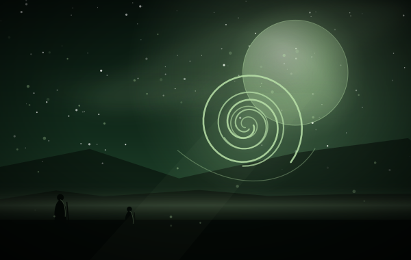
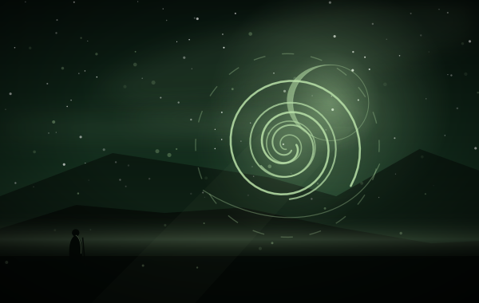
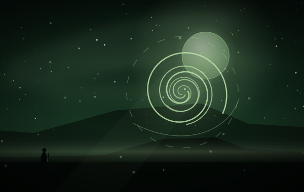
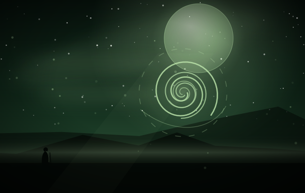
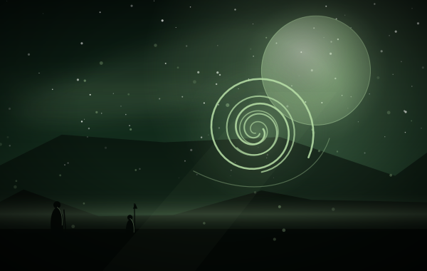
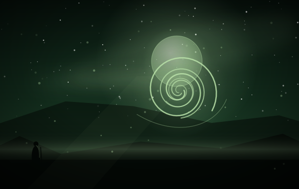
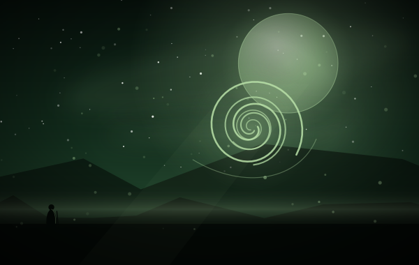

把一个「树人」加入末端战区
同一条线的更高费版本
由「古老生灵」生成
同一产品的两个价位
新的勇者 › 伊芙格林编组
御风五张（狂风呼啸、引风来、强风骤雨、长风破袭、永恒的记忆），都以扣取她当前防御力为代价；风之感知不算御风，它只是给一张牌打上御风标签。苍叶与树人提供额外的身体与防御来源。
英雄：伊芙格林 把防御当燃料
类别：魔法 · 收藏上限 2
标签（归档者归纳，含规则词条）
释义照录规则原文；标注「归档注」的是归档者补的说明。
3 费把「树人」放进末端战区。树人是御风体系的「反应堆」：每次御风对随机敌方目标打 50 点。它比「记忆中的苍翠」贵 1 费，但产物会一直在场 —— 一张把「一次性」换成「常驻」的选择题。
——归档者，读这张卡的时候





